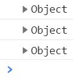
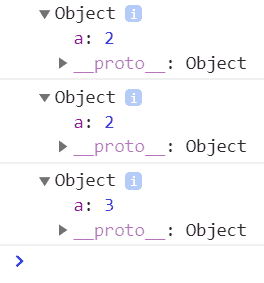
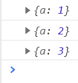
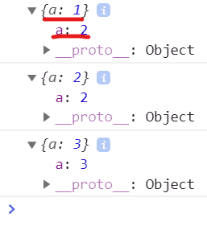
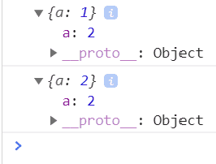
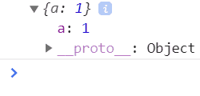
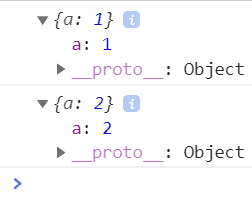
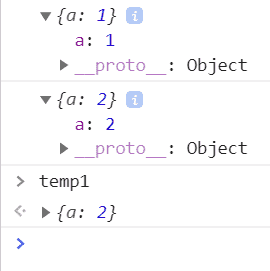
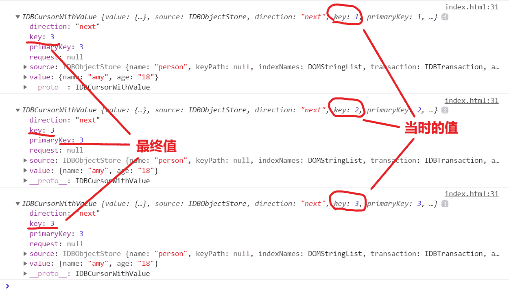

各位, 这个坑你可能真不知道! 先看一下下面的非常简单的代码, 你能预测出浏览器控制台的输出吗?
let o = {a: 1};
console.log(o);
o.a = 2;
console.log(o);
o = {a: 3};
console.log(o);打开这个测试网页, 再打开控制台看一下, 嗯, 就是这个样子:

展开看!

第三个的值和前两个不一样, 但是前两个的值是一样的! 也就是说, 某个地址上的对象,
console.log的结果是当前的最终值! 而第3个o, 由于o所指代的对象的地址变了, 所以不会对前两个有影响.不过你以为事情就这样结束了? nonono. 现在同样的代码, 我们先打开控制台, 按一下F5刷新, 看一下结果:

??? 为什么第一个显示的值又跟第二个不一样了? 别急, 我们打开看一下:

看来眼见不一定就是真实的啊. tm外面显示的是
{a: 1}, 里面包了个{a: 2}, 厉不厉害! 这时其实只是显示问题, 前两个的真实值都是{a: 2}, 因为它们就是一个地址上的对象! 这说明控制台的对象外层显示不会跟着刷新.接下来我们更改下代码, 看看设置定时器会有什么结果!
var a = {a: 1};
console.log(a);
setTimeout(function () {
a.a = 2;
console.log(a);
}, 5000);嗯, 打开控制台, 按F5刷新, 等5秒钟, 这个结果跟前一个是一样的, 外层不刷新, 内层是真实值.

下面我们这么操作一下! 按F5刷新之后, 第一个值会在控制台上打印出来, 这时我们先把他打开, 此时定时器还没到时间, 其里面的值当然是这样:

5秒钟后, 第二个值也打印出来了. 你看第一个显示值的内层并没有跟着变成
{a: 2}!
所以啊, 即使是控制台里的对象内层值, 它也可能不是真实的! 和第2个结论合起来, 就是你看到过的就不会变了! 当然, 这两个显示值指代的是一个变量, 只不过是第一个显示值没更新而已. 我们可以在第一个显示对象上按右键, 选择
Storage as global variable, 把它保存到当前的全局环境:
可以看到, 其实变量的真实值是
{a: 2}, 只是显示没更新而已.所以你还相信浏览器控制台里的输出吗? 这个问题我是在测试浏览器indexedDB的遍历方法时发现的, 当时的代码是这样的:
let open = objectStore.openCursor();
open.onsuccess = function () {
let cursor = open.result;
if(cursor) {
console.log(cursor);
cursor.continue();
}
}里面的
cursor.continue()会重复触发success事件. 由于每次console.log()中cursor的实际指向都是同一个对象, 所以console.log()会出现上面第2条中介绍的问题, 即所有显示值的内层都是cursor对象的最终值, 但是外层确是当时的cursor对象值. 注意下图中标注的部分:
--- 本文结束 The End ---